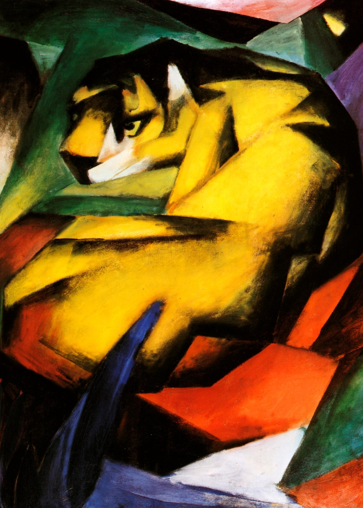

<head>
<meta charset="UTF-8" />
<meta name="keywords" content="drawing, painting" />
<meta name="description" content="drawings by Sunjy" />
<title>Sunjy</title>
<link rel="shortcut icon" type="image/x-icon" href="../../mImages/mCommon/favicon.ico" media="screen" />
<link rel="stylesheet" type="text/css" href="../../mCsses/mCommon/mCssA.css" />
<link rel="stylesheet" type="text/css" href="../../mCsses/mCommon/mCssB.css" />
<link rel="stylesheet" type="text/css" href="../../mCsses/mCommon/mCssC.css" />
<link rel="stylesheet" type="text/css" href="../../mCsses/mCommon/mCssD.css" />
<link rel="stylesheet" type="text/css" href="../../mCsses/mContent/mCssA.css" />
<link rel="stylesheet" type="text/css" href="../../mCsses/mContent/mCssB.css" />
<link rel="stylesheet" type="text/css" href="../../mCsses/mContent/mCssC.css" />
<link rel="stylesheet" type="text/css" href="../../mCsses/mContent/mCssD.css" />
</head>
<script type="text/javascript" src="../../mScripts/mContent/mContentAA.js" /></script>
<script type="text/javascript" src="../../mScripts/mContent/mContentAB.js" /></script>
<script type="text/javascript" src="../../mScripts/mContent/mContentAC.js" /></script>
<script type="text/javascript" src="../../mScripts/mContent/mContentAD.js" /></script>
<script type="text/javascript"></script> 
<script type="text/javascript">
document.write('<div class="mImgAbsolute"></div>');
/*
document.write('<p class="mFontSizeBColor" />From a white paper...</p>');
document.write('<table class="center"><tr><td>');
document.write('');
document.write('</td></tr></table>');
*/
</script>


<script type="text/javascript">
document.write('<p class="mFontSizeBColor" />Tiger</p>');
document.write('<p class="mFontSizeSColor" />Tiger by Franz Marc is one of the artist’s several depictions of animals in the Expressionist style. Tiger demonstrates a sense of restlessness, tension, imminence, and anticipation.<br><br>The landscape is composed entirely of cubic forms rendered in bright luminous tones. The tiger is disturbed from its rest; its head has risen, its yellow eyes fixed upon its next prey or the impending danger.<br><br>The tiger’s strength is represented by intersecting shards of color and acute angles, which are contained within the bold, black outline.<br><br>The central motif of this painting is the tiger, surrounded by a colorful, jungle landscape. The tiger’s recognizable dark stripes characterize the picture on yellowish fur and the dynamic jungle background.<br><br>Tiger forms part of Marc’s formative phase, during which he became fascinated by futurism and cubism, in which he created art that was increasingly stark and abstract.<br><br>This work is filled with tension, with a sense of apprehension, with a presentiment of quick and sudden death.<br><br>Marc’s Tiger shows the influence of Picasso’s cubism and Paul Cezanne. Cubism is used as a means of heightening realism and sentiment, together with Marc’s interest in bold, primary colors, and their potential to convey emotion is evident in this artwork.<br><br>Expressionism<br><br>Expressionism is a modernist movement, originating in Germany at the beginning of the 20th century. It presents the world from a subjective perspective, distorting it radically for the emotional effect to evoke moods or ideas.<br><br>Expressionist artists sought to express the meaning of emotional experience rather than physical reality. Expressionism developed as a new style before the First World War. It remained popular during the Weimar Republic, particularly in Berlin.<br></p>');
document.write('<table class="center" /><tr><td>');
document.write('<br>The landscape is composed entirely of cubic forms rendered in bright luminous tones. The tiger is disturbed from its rest; its head has risen, its yellow eyes fixed upon its next prey or the impending danger.<br><br>The tiger’s strength is represented by intersecting shards of color and acute angles, which are contained within the bold, black outline.<br><br>The central motif of this painting is the tiger, surrounded by a colorful, jungle landscape. The tiger’s recognizable dark stripes characterize the picture on yellowish fur and the dynamic jungle background.<br><br>Tiger forms part of Marc’s formative phase, during which he became fascinated by futurism and cubism, in which he created art that was increasingly stark and abstract.<br><br>This work is filled with tension, with a sense of apprehension, with a presentiment of quick and sudden death.<br><br>Marc’s Tiger shows the influence of Picasso’s cubism and Paul Cezanne. Cubism is used as a means of heightening realism and sentiment, together with Marc’s interest in bold, primary colors, and their potential to convey emotion is evident in this artwork.<br><br>Expressionism<br><br>Expressionism is a modernist movement, originating in Germany at the beginning of the 20th century. It presents the world from a subjective perspective, distorting it radically for the emotional effect to evoke moods or ideas.<br><br>Expressionist artists sought to express the meaning of emotional experience rather than physical reality. Expressionism developed as a new style before the First World War. It remained popular during the Weimar Republic, particularly in Berlin.<br>" />');
document.write('</td></tr></table>');
</script>


